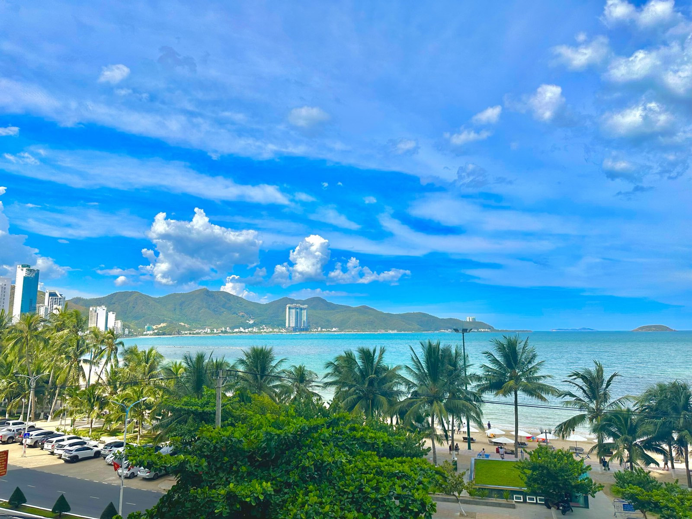

Điểm tin BĐS Khánh Hòa tuần 28/9–4/10: sáu tin đáng để ý
Lãi vay mua nhà tháng 10 chưa có cửa giảm, chiến dịch 90 ngày giải phóng mặt bằng khép lại với 21/40 dự án đạt, hàng ngân hàng ở Cam Lâm phải hạ giá 10% mới đấu lại, đền bù theo hệ số K chênh nhau gấp bốn lần trên cùng một con đường, nhà ở xã hội mới đáp ứng hơn một phần tư nhu cầu và kinh tế tỉnh tăng 11,21%. Sáu tin của tuần, mỗi tin kèm một câu: nghĩa là gì với người cầm tiền hoặc cầm đất.

Ảnh tư liệu. Mỗi sáng tôi đọc tin thị trường rồi gửi khách. Cuối tuần tôi gom lại những tin thật sự chạm vào túi tiền.
Mỗi sáng tôi đọc tin thị trường rồi gửi bản tóm tắt cho khách qua Zalo. Cuối tuần tôi gom lại những tin đáng để ý nhất, kèm một câu: điều này nghĩa là gì với người đang cầm tiền hoặc cầm đất.
1. ⭐ Lãi vay tháng 10: ưu đãi vẫn đẹp, nhưng hãy tính bằng con số sau ưu đãi
Bảng lãi vay mua nhà tháng 10: BIDV ưu đãi 9,5% (cố định 12 tháng) đến 10,5% (24 tháng), VIB cố định 11,5% trong 60 tháng. Hết ưu đãi, có nguồn ước lãi thả nổi lên 16–17%/năm. Cùng tuần, VPBank và MB trả 9,1–9,2%/năm cho chứng chỉ tiền gửi. Một doanh nghiệp bất động sản vay 57 tỷ bị nâng lãi từ 10,6% lên 15,3%/năm chỉ một tháng sau giải ngân. Thêm vào đó, CPI bình quân 9 tháng tăng 4,52%, nhích qua mức khoảng 4,5% mà Quốc hội đặt ra, và lợi suất trái phiếu Mỹ 10 năm vẫn ở 5,34%.
Nghĩa là gì: lạm phát vượt ngưỡng và tiền gửi trả cao là hai lý do để lãi vay chưa giảm trong quý 4. Mức thả nổi các nguồn đưa ra cũng vênh nhau: tôi từng ghi dải 12–14%, tuần này có nguồn nói 16–17%. Cách an toàn là lấy số cao để thử xem khoản trả hằng tháng có chịu nổi không. Bảng tính mẫu tôi đã làm sẵn trong bài lãi tiết kiệm lên 9%, lãi vay quanh 11% (nguồn: Thương Gia 3/10; VietNamNet 29/9 và 1/10; VOV 4/10; VnExpress 3/10).
2. ⭐ Chiến dịch 90 ngày mặt bằng khép lại: 21/40 dự án đạt
Kết thúc 90 ngày cao điểm giải phóng mặt bằng, 21 trên 40 dự án đạt hoặc vượt mục tiêu, 12 dự án trượt. Khu đô thị hành chính Diên Khánh đạt 97,5%, đường liên vùng qua Nha Trang 100%. Bệnh viện Đa khoa tỉnh mới chỉ được 7,23%. Dự án chỉnh trị hạ lưu sông Tắc giai đoạn 2 (Nam Nha Trang) có 143 thửa nhưng mới xong 23. Từ 1/10 tỉnh chuyển sang quản lý tiến độ theo từng tuần.
Nghĩa là gì: cùng một chiến dịch mà kết quả lệch nhau rất xa, từ gần 100% đến dưới 10%. Vì vậy đừng nghe "khu này sắp có dự án" rồi xuống tiền. Hãy hỏi đúng tên dự án đó đã bàn giao bao nhiêu phần trăm mặt bằng. Cách đọc ba tầng (quy hoạch, mặt bằng, giải ngân) tôi viết ở bài ba tầng lọc một dự án (nguồn: Báo Khánh Hòa 30/9 và 1/10).
3. ⭐ Hàng ngân hàng ở Cam Lâm hạ giá 10% để đấu lại
Thửa 217 ở xã Cam Lâm là tài sản ngân hàng phát mại. Thửa này lên lịch đấu giá lại ngày 23/10 với giá khởi điểm hạ đúng 10%, từ 1,889 tỷ (phiên 28/9) xuống 1,7 tỷ. Ở Bắc Nha Trang, thửa 350 tôi viết tuần trước cũng đã rao đấu ba lần trong hai tháng, lần nào cũng hạ giá. Ngoài tỉnh, chung cư TP HCM tháng 8 có gần 10.000 căn chào bán nhưng chỉ bán được khoảng 1.055 căn (khoảng 11%). Nhiều chủ chấp nhận giảm 20–30% so với kỳ vọng.
Nghĩa là gì: một tài sản đã có giá khởi điểm công khai mà phải hạ giá nhiều lần mới tìm được người mua là tín hiệu thanh khoản thật. Tín hiệu này đáng tin hơn mọi lời rao "khu này đang sốt". Người mua đang có thời gian, nhưng nhớ đọc quy chế đấu giá trước khi đọc giá. Bốn dòng cần đọc tôi ghi trong bài ba phiên đấu giá tháng 10 (nguồn: Báo Đấu thầu 2/10; VnExpress 2/10).
4. Cùng một con đường, đền bù chênh nhau gấp bốn lần
Đường Lê Duẩn đoạn 4 (Bắc Cam Ranh): đất nông nghiệp vị trí 1 được bồi thường theo hệ số K chỉ khoảng 179.000 đồng/m², bằng 24,6% mức 728.300 đồng/m² của đoạn 3. Cũng trong tuần, Thuế cơ sở 1 Khánh Hòa báo nợ thuế đến 31/8 là 166,5 tỷ, tăng 74 tỷ so với cùng kỳ. Phần lớn là tiền sử dụng đất của người đã chuyển mục đích lên đất ở nhưng chưa nộp đủ, và đã có 1.025 thông báo tạm hoãn xuất cảnh. Ở tầm luật, dự thảo Luật Đất đai sửa đổi đề xuất thêm 3 trường hợp Nhà nước thu hồi đất, trong đó có dự án nhà ở cho thuê và trung tâm logistics cảng trên 50 ha. Đây mới là dự thảo, chưa thông qua.
Nghĩa là gì: ai mua đất nông nghiệp nằm trong vùng dự án thì đừng tính lời theo giá đền bù của đoạn bên cạnh. Ai định chuyển lên đất ở thì tính đủ tiền sử dụng đất ngay từ đầu, vì nợ khoản này có thể bị tạm hoãn xuất cảnh. Bảng giá đất làm căn cứ tôi tóm ở bài bảng giá đất 2026 Khánh Hòa (nguồn: Báo Khánh Hòa 28/9 và 29/9; VnExpress 2/10).
5. Nhà ở xã hội: 899.857 căn cho cả nước, Khánh Hòa mới đủ hơn một phần tư nhu cầu
Nghị quyết 303 ngày 30/9 giao các địa phương 899.857 căn nhà ở xã hội giai đoạn 2026–2030, trong đó 191.023 căn cho thuê (khoảng 21%). Đoàn giám sát HĐND tỉnh ngày 1/10 cho biết: nhu cầu đến 2030 khoảng 97.400 căn, hiện mới có 25.937 căn (26,6%). Giá khoảng 18 triệu/m² ở phía Nam, 21–24,6 triệu/m² ở phía Bắc tỉnh. Hai dự án ở Nam Nha Trang có mốc: CT-02 (khoảng 1.000 căn) dự kiến xong quý III/2027, CT-01 (hơn 770 căn) quý IV/2027.
Nghĩa là gì: cung tăng nhưng vẫn còn xa mới đủ cầu, và tỷ lệ căn cho thuê được đẩy lên rõ rệt. Nghị quyết chưa công bố chỉ tiêu riêng của Khánh Hòa. Thứ Sáu tuần này tôi sẽ viết một bài riêng về chuyện ai nên chờ, ai nên tìm phương án khác (nguồn: VnExpress 30/9; Báo Khánh Hòa 1/10; Báo Xây dựng 2/10).
6. Kinh tế tỉnh tăng 11,21%, và vốn lớn tiếp tục đổ về hai đầu tỉnh
GRDP Khánh Hòa 9 tháng tăng 11,21%, vốn đầu tư toàn xã hội tăng hơn 33%, thu ngân sách đạt 96% dự toán năm. Cả nước: GDP quý III tăng 9,95%, FDI đăng ký 9 tháng 50,36 tỷ USD (+76,4%). Ở phía Nam tỉnh, Vinhomes nâng tổng vốn khu đô thị ven vịnh Cam Ranh từ 85.300 tỷ lên 194.000 tỷ đồng, dự kiến có doanh thu từ 2028. Ở phía Bắc, nhà máy đóng tàu tại Nam Vân Phong đang làm ụ số 4 (xong 12/2026) với khoảng 5.400 lao động.
Nghĩa là gì: tăng trưởng là thật, nhưng chính kinh tế nóng cũng là lý do lãi suất khó hạ. Cầu thuê nhà từ người lao động ở Ninh Hòa và Vạn Ninh là cầu có thật, đo được bằng số người. Còn con số vốn "nghìn tỷ" của một dự án lớn chưa phải là tiền đã chạy. Thứ Tư tuần này tôi sẽ viết riêng cách đọc những tin như vậy (nguồn: VOV 4/10; Báo Chính phủ 3/10; VnExpress 3/10; Báo Khánh Hòa 4/10).
Điều tôi để ý nhất tuần này
Ba tin trong tuần cùng nói một chuyện: hàng ngân hàng ở Cam Lâm phải hạ giá 10%, chủ chung cư ở TP HCM chấp nhận giảm 20–30%, trong khi tiền gửi trả quanh 9%/năm. Thị trường đang trả công cho người kiên nhẫn. Tôi không nói "đừng mua". Tôi nói: lúc này người mua có quyền đặt câu hỏi, đòi giấy tờ và chờ thêm một phiên. Đừng để ai biến sự sốt ruột của mình thành công cụ chốt deal.
Bản tin tổng hợp từ các nguồn báo chí trong tuần 28/9–4/10/2026 mà tôi đọc và gửi khách hằng ngày. Đây là tin tổng hợp, không phải văn bản gốc. Trước khi dùng bất kỳ con số nào để ra quyết định, anh/chị nên kiểm chứng lại tại nguồn chính thức.
"Rồi, ngày mới tốt lành nhé."
Muốn nhận bản tin này mỗi sáng 7h?
Tôi đọc tin thị trường mỗi sáng rồi gửi bản tóm tắt cho khách qua Zalo, có ghi nguồn và nói rõ chỗ nào số liệu đang vênh. Nhắn "BẢN TIN" để nhận miễn phí.
Nhắn Zalo — 0869 668 638